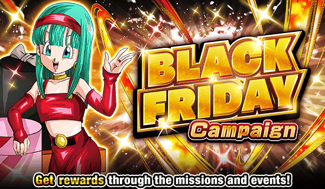
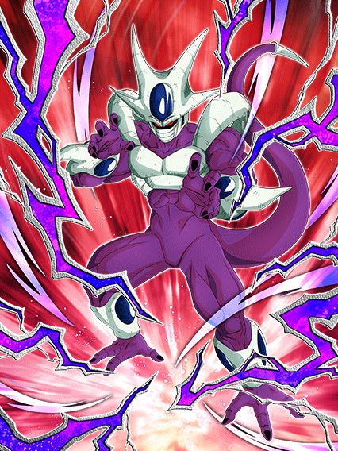
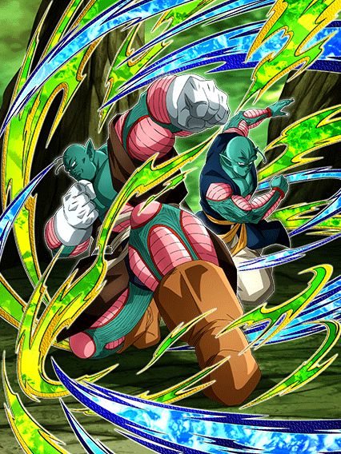
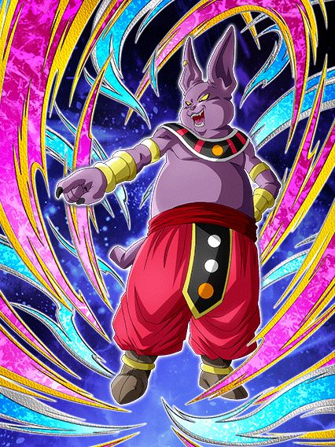

Celebração Tanabata Black Friday

A celebração do Jiren.. sem o Jiren.
Simplesmente nada a declarar.
^
Sumário (clique para ir a qualquer um dos tópicos)
- Freeza / Cooler do Modo Quest
- Dokkan Awakening do Hit F2P
- Dokkan Awakening do Saonel & Pirina F2P
- dokkan awakening do champa f2p
- O EZA do Piccolo INT
- EZA do 17 MVP TEQ
- EZA da Android 18 TEQ
- EZA do Majin Buu Magro
Freeza / Cooler do Modo Quest
O Cooler e o irmão do Cooler.
Esse cara stacka 50% de ATK no SA, e estando com um aliado Wicked Bloodline e acima de 50% de HP, esse cara tem 40% de redução de dano, além de 50% de chance de crítico se a rotação toda for Extreme Class
O único ruim dele é a condição de troca, sendo a partir do quinto turno dele ou estar abaixo de 50% de HP 💀

O Cooler fica bem parecido com o LR dele, precisando dar Supers pra ter defesa
Por 1 turno ele tem 40% de redução de dano que cai pra 20%, e ganha 10% de redução por SA feito no turno
Ele até lança 2 adicionais, mas eles tem 30% de chance de serem Supers 💀
É um bom card com boas animações, mas que precisa de um pouco mais
O Dokkan Awakening do Hit F2P

Esse cara muda orbs INT pra rainbow, tem 66% de chance de desvio incondicional e ainda ganha +6% por cada SA feito no turno
Não só isso, mas ele também countera toda vez que desvia, se tornando basicamente uma versão muito nerfada do Goku UI TEQ
Pra um SSR que não tinha nada, esse cara ganhou um Awakening de respeito.
O Dokkan Awakening dos Namekuseijins do Universo 6 F2P

Esses caras precisam de um time completo Namekians ou Universe 6 pra ter Defesa Ativa, 350% de ATK e DEF e um adicional com 70% de chance de ser um SA
Em geral, eles são bem simplões, mas é legal eles não serem horríveis
o dokkan awakening do champa f2p

Se lembra do eza do champa phy que rolou esse ano? Esse cara é a mesma coisa, só que pior
Não satisfeito com ter 30% de chance de ter 500% de ATK, esse cara conta com INCRÍVEIS 10% DE CHANCE DE TER 600% DE ATK
Intankavel.
O EZA do Piccolo INT
Bom suporte.
Esse cara dá 30% de ATK e 60% de DEF pra Representatives of Universe 7, além de ter Defesa Ativa se todos os aliados estiverem na categoria
Apesar de simples, ele tem um dano decente e uma boa defesa, facilmente preenchendo algum espaço no time.
O EZA do 17 MVP TEQ
Bro precisa de orbs e NÃO cria orbs 💀
Esse cara é um semi-nuker que quer orbs pra ter ATK e DEF, além de ter 30% de chance de desvio e ganhar +17% por rainbow orb pega
Como todo nuker, caso você consiga pegar orbs de forma constante, ele vai ser bom, e caso contrário... ehhhhhh
O EZA da Android 18 TEQ
O 17 MVP, só que melhor.
A 18 também é nuker, mas ela pelo menos muda orbs PHY e STR pra TEQ
Ela também tem um SA muito insano, dando 50% de DEF por 6 turnos, o que transforma ela numa parede
E felizmente ela ganha 35% de redução de dano se tiver um aliado Battle of Wits no turno, então tá safe
O EZA do Majin Buu Magro
Antes uma fraude, e agora uma lenda.
Esse cara ainda tem 50% de chance de desvio por 7 turnos, mas agora ele ganha +10% por aliado Representatives of Universe 7 no turno
E o mais quebrado dele é o fato de que cada desvio dá 7% de ATK e DEF a mais e 7% de redução de dano, ambos chegando a 77%.
Ou seja, depois do desvio acabar, ele vira um tank e não um farelo
Você chegou ao fim dessa página!
Obrigado por ler tudo, e fica a vontade pra ver outras